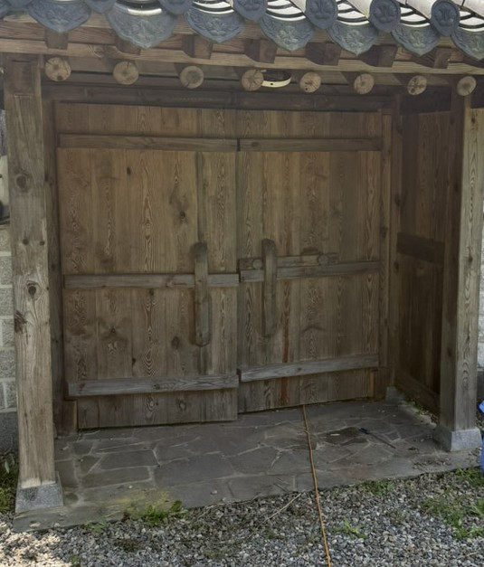
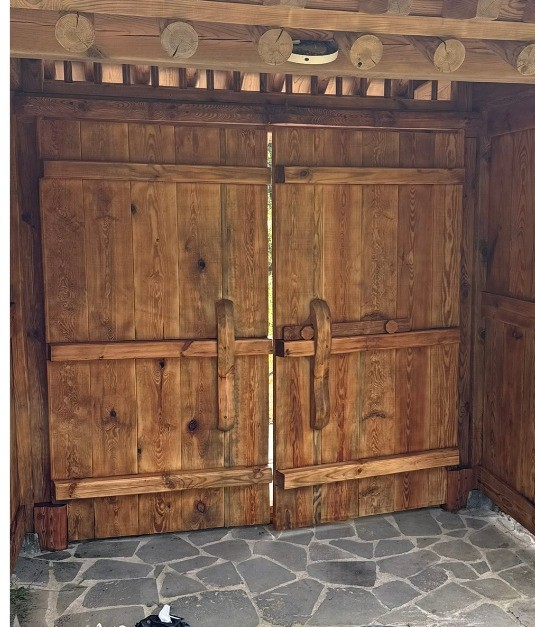

한옥 대문 · 솟을대문 오일스테인
한옥에서 제일 먼저 상하는 게 대문입니다. 처마가 가려주지 못하는 자리에 서 있어서 햇빛과 비를 정면으로 받습니다.
회갈색으로 바래는 건 자외선 때문입니다
대문이 검게 또는 회갈색으로 변하는 건 더러워진 게 아니라 목재 표면이 자외선에 분해된 상태입니다. 닦아내도 돌아오지 않습니다. 변색된 층을 샌딩으로 벗겨내야 안쪽의 밝은 나뭇결이 나옵니다. 가평 솟을대문도 그렇게 되살렸습니다.
조각과 모서리는 손으로 갑니다
솟을대문에는 문양과 조각이 들어가 있습니다. 기계로 밀면 조각 날이 뭉개집니다. 넓은 판면은 기계로 잡고, 조각과 모서리, 틈새는 손으로 번수를 낮춰가며 정리합니다. 여기서 시간이 제일 많이 걸립니다.
얇게 여러 번 겹쳐 발라야 먹습니다
오일스테인은 나무 안으로 스며들어야 보호가 됩니다. 한 번에 두껍게 올리면 표면에서 굳어 끈적이고 햇빛을 받으면 얼룩이 생깁니다. 얇게 바르고 마르기를 기다려 다시 올리는 식으로 겹칩니다.
구조는 그대로 두고 표면만 손봅니다
대문을 떼어다 새로 짜는 게 아닙니다. 짜여 있는 구조는 그대로 살리고 표면의 변색층과 거칠어진 부분만 정리합니다. 원래 쓰던 문이 가진 모양을 바꾸지 않는 게 복원입니다.
이런 작업을 합니다
- 한옥 솟을대문 연마·오일스테인
- 일각대문·평대문 목재 복원
- 문양·조각 부위 수작업 연마
- 변색층 제거와 나뭇결 복원
- 틈새·마구리면 집중 도포
WORKS
한옥 대문 오일스테인 시공사례
실제로 작업한 현장입니다. 시공 전후를 같은 각도에서 담았습니다.


양평 용문산 한옥 대문 오일스테인
경기 양평 용문산 소재 한옥 솟을대문. 오랜 세월 빛바랜 목재 표면을 연마하고 친환경 오일스테인으로 마감해 원목 본연의 결과 색감을 되살렸습니다.


한옥 대문 복원
낡고 변색된 한옥 솟을대문을 연마·복원하고 오일스테인으로 마감했습니다. 구조는 그대로 살리면서 원목 본연의 밝고 따뜻한 색감을 되찾은 사례입니다.


가평 한옥 솟을대문 오일스테인
경기 가평의 오래된 한옥 솟을대문. 자외선과 습기로 짙은 회갈색으로 변색되고 표면이 거칠어진 목재를 샌딩으로 벗겨낸 뒤, 오일스테인을 얇게 여러 번 겹쳐 발라 원래의 밝은 나뭇결을 되살렸습니다.
FAQ
한옥 대문 오일스테인, 자주 묻는 질문
대문 색이 완전히 검게 변했는데 되돌아오나요?
표면 변색이면 돌아옵니다. 변색된 층을 샌딩으로 벗겨내면 안쪽의 밝은 결이 나옵니다. 다만 목재가 물러져 손으로 눌러 들어가는 자리는 도장으로 해결되지 않아 그 부분은 따로 말씀드립니다.
조각이 많은 대문도 되나요?
됩니다. 조각과 틈새는 기계를 쓰지 않고 손으로 정리합니다. 가평 솟을대문이 그런 현장이었습니다.
원래 색으로 돌아가나요, 다른 색도 되나요?
원목 결을 살리는 밝은 톤과 짙은 톤 모두 됩니다. 현장에서 눈에 안 띄는 자리에 시험 도포를 해서 마른 색을 보여드리고 결정합니다.
몇 년마다 다시 해야 하나요?
대문은 비를 그대로 맞는 자리라 가려진 목재보다 주기가 짧습니다. 손으로 쓸었을 때 보풀이 일어나거나 색이 빠지기 시작하면 그때가 시기입니다.
다른 시공분야 · 지역
찾으시는 작업이 아래에 있으면 해당 페이지를 보시면 됩니다.